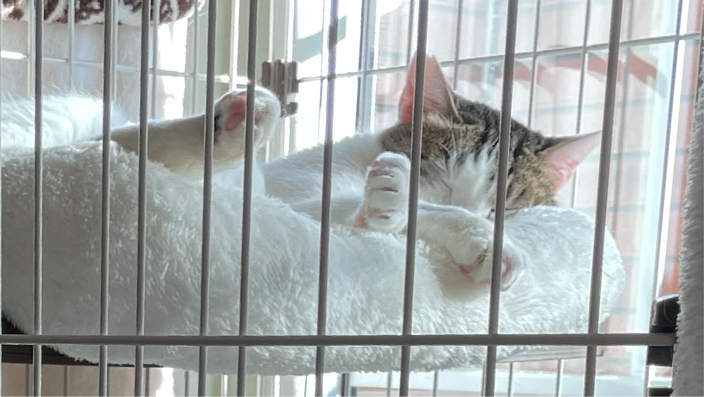

ボランティア募集
預かりボランティア募集
四つ葉ねこでは預かりボランティアを募集しています。
「ボランティア預かり」とは、さまざまな理由で保護された猫が、 新しい家族に出会うまでの間
ご自宅で愛情を持って保護猫のお世話をしていただくボランティア活動です。

あなたの優しさが、辛い境遇を乗り越えてきた保護猫たちの明るい未来を作ります。私たちと一緒に、猫たちの未来を守りませんか？
四つ葉ねこでのボランティア活動に興味がある方は、下記のお問い合わせフォームからご連絡ください🐾